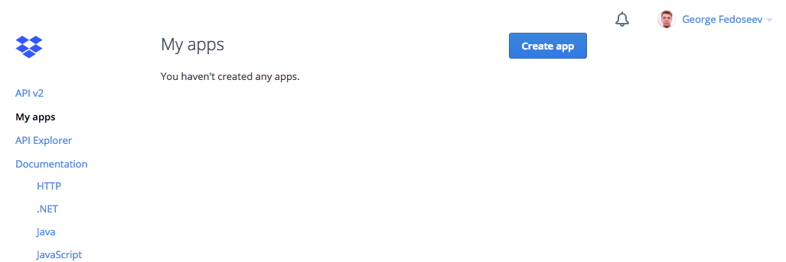
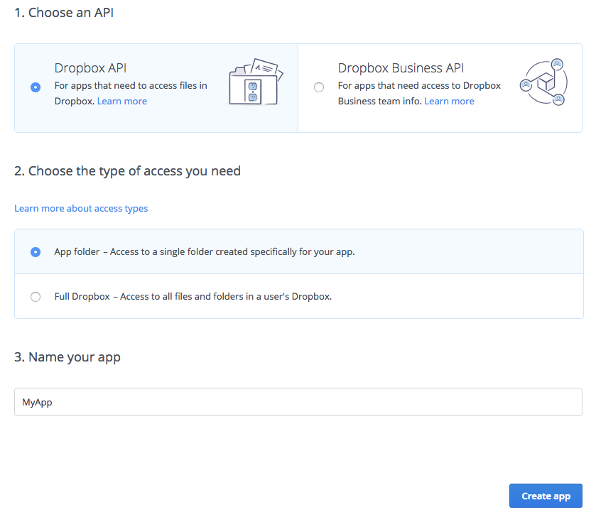
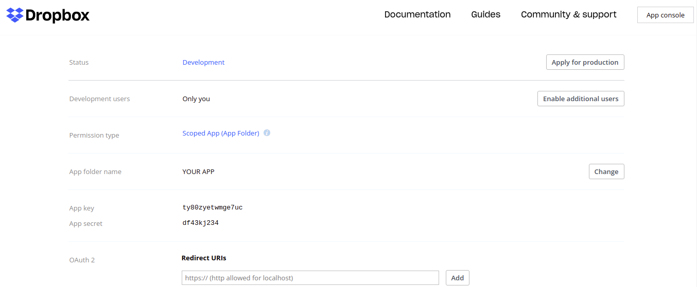

George Fedoseev George Fedoseev
George Fedoseev George Fedoseev
Navigate to Dropbox App creating page and click Create app button.

Create new app folder

After creation you will be redirected to https://www.dropbox.com/developers/apps/info/<your-app-key>. Here you need to copy App key and App secret for your app that will be used by DropboxSync component parameters.

Paste app key and app secret into DropboxSync Script inspector field in DownloadFileExample scene in Unity (you will find the scene in /DropboxSync_v4/Examples/).


If you want to use your own Dropbox account for all users of your app (in contrast with letting users to log in to their own), you should provide a refresh token in DropboxSync parameters.
To get the refresh token click Get Refresh Token button and follow steps in the web browser. Copy authorization code from final web OAuth2 flow step into respective DropboxSync component input and click Submit. After that Dropbox Refresh Token field should be filled.


Now you have example scene connected to your app folder. To run example scenes you need to copy example content to your created app folder.
Save this folder to your Dropbox account and then move it to created app folder that you copied accessToken for on previous steps.
NOTE: for each scene you'll need to insert accessCode of your Dropbox app.
Now when you run DownloadFileExample scene you should see something like this:

(to open Transfers pop-up click on the button on the top right)
To run other example scene (FileExplorerExample) copy accessToken to DropboxSync inspector field same way and click play. You should see something like this:

To use DropboxSync asset in your own scenes create GameObject and attach DropboxSync script to it. Then use asset from your scripts through DropboxSync.Main instance.